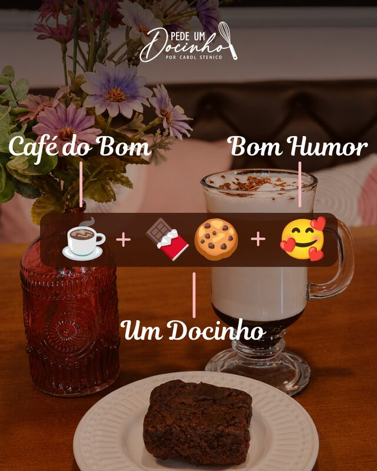
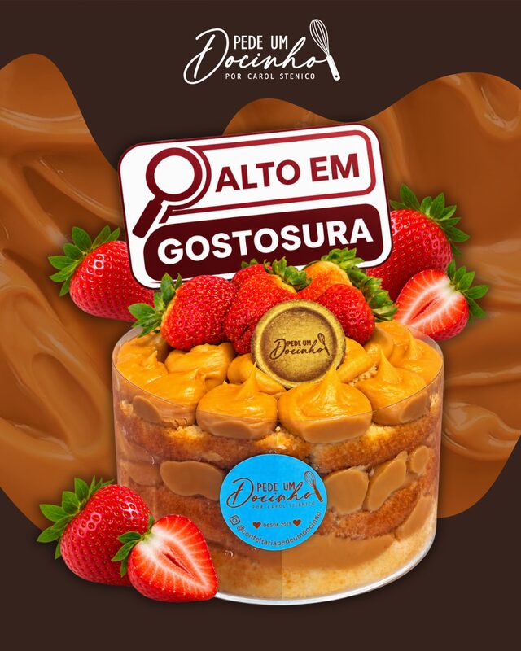
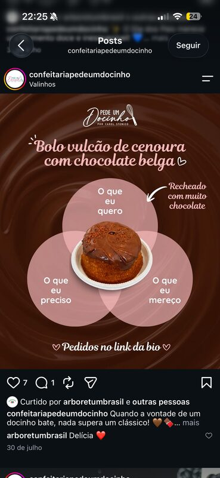
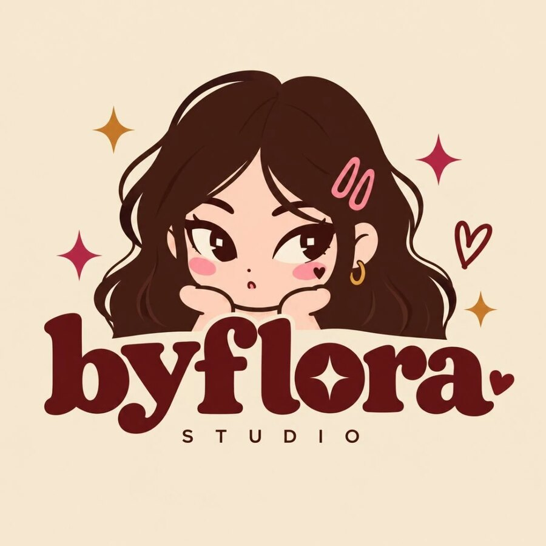
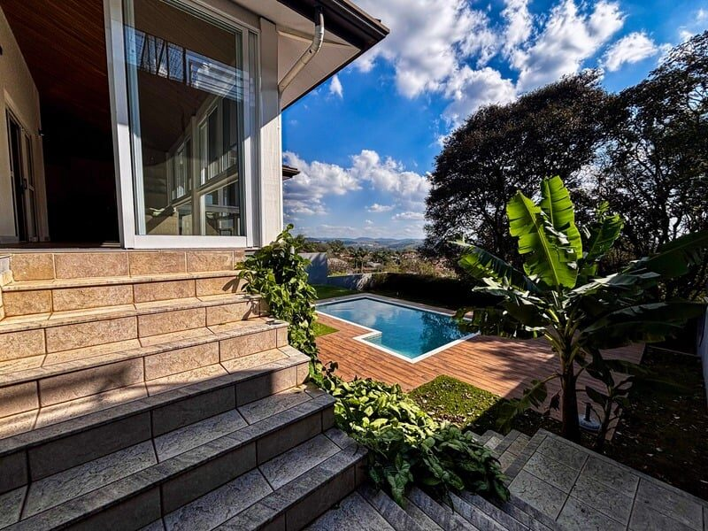
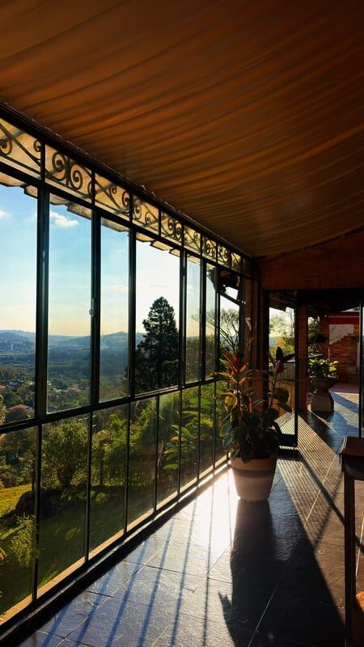
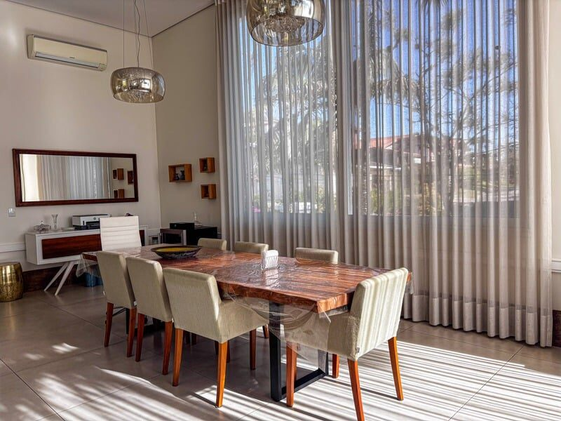
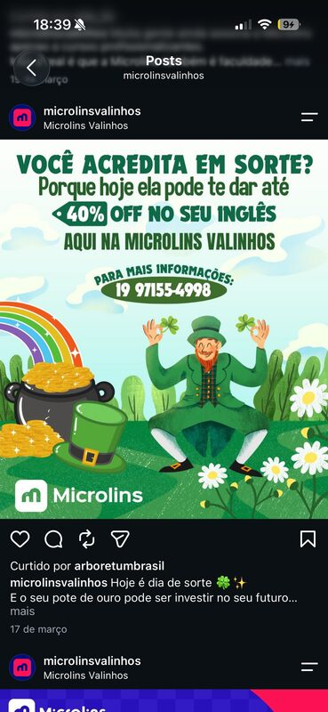
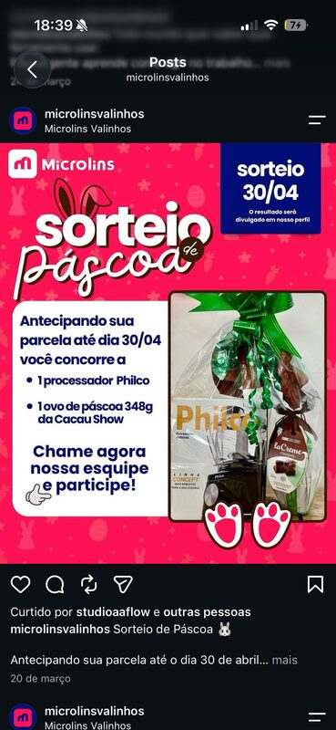
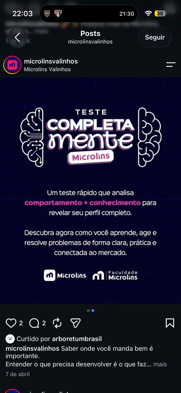

Pede um Docinho
Social Media para a confeitaria



Linha visual apetitosa e constante para uma confeitaria de bairro: posts de produto, campanhas sazonais e stories que levam direto ao pedido.

Flora Stenico é social media e criadora de conteúdo. Há 2 anos transformando ideias em conteúdo que conecta.
Com tempo? Role e veja os trabalhos.
Com pressa? Fala comigo
01 Sobre
Atuo com projetos fixos, freelancers e pontuais nas áreas de marketing, social media, criação de conteúdo e design — desenvolvendo soluções estratégicas e criativas para marcas e negócios.
Do planejamento ao relatório: eu entendo a marca, desenho a estratégia, capto, edito, publico e acompanho os resultados.
02 Trabalhos selecionados
Social Media para a confeitaria



Linha visual apetitosa e constante para uma confeitaria de bairro: posts de produto, campanhas sazonais e stories que levam direto ao pedido.
Analista de Marketing e Social Media



A REMAX Clarity buscava fortalecer sua presença digital, aumentar o alcance dos conteúdos e consolidar sua comunicação nas redes sociais.
Desenvolvimento de conteúdos estratégicos, gestão das redes sociais, criação de materiais visuais e produção audiovisual.
Mais de 169 mil visualizações no Instagram e destaque em faturamento, fortalecendo a presença e o desempenho da marca.
Social Media e Design



Campanhas de captação para uma escola profissionalizante: promoções, sorteios e testes interativos desenhados para gerar contato no direct.
03 Serviços
Gestão e criação de conteúdo para redes sociais.
Cobertura de eventos e criação de Stories em tempo real.
Fotos e vídeos que valorizam marcas e produtos.
Campanhas estratégicas para alcançar o público certo.
04 Como eu trabalho
Entendo a marca, o público e desenvolvo ideias estratégicas.
Transformo ideias em conteúdos, campanhas e experiências.
Capto, edito e aperfeiçoo cada detalhe do conteúdo.
Publico, acompanho os resultados e otimizo as estratégias.
05 Com quem eu trabalho
Distribuição de clientes entre diferentes setores e segmentos.
Vamos transformar suas ideias em resultados?